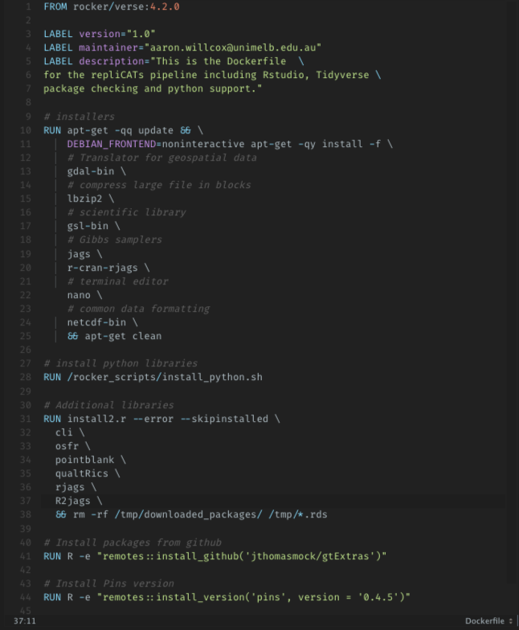

The ability to produce equivalent analytical outcomes from the same data set using the same code and software as the original study (Fidler et al., 2017).

ResOps is an attempt to distinguish scientific software from DevOps. Emphasising communities of practice that, enable the convergence of tools implemented in the scientific community, to enable computational reproducibility in the form of a scientific workflow.
Wants to share a trade secret with scientists: Most professional computer software isnt very good. That the code is a little raw is one of the main reasons scientists give for not sharing it with others. So if your code is good enough to do the job then it is good enough to release (Barnes, 2010).